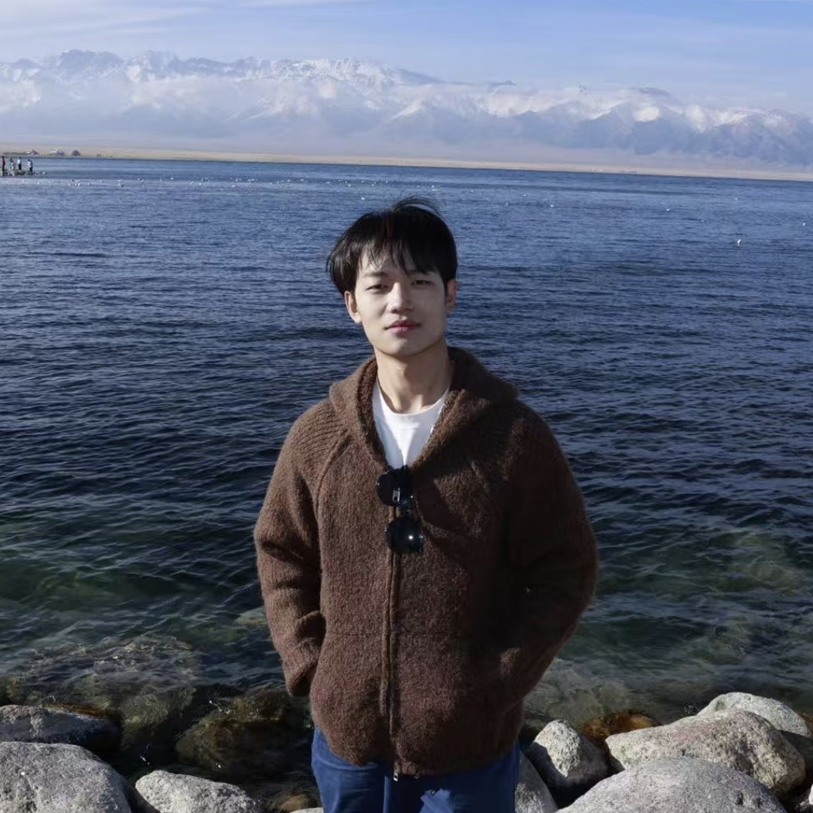

Nan Wang
I am a researcher at AGIBOT, working on generative world models, neural rendering, and embodied AI for humanoid robotics.
I earned my M.Sc. in Computer Science from Tongji University and exploring how photorealistic simulation accelerates VR, robotics, and autonomous driving.
- Current Researcher · AGIBOT
- Focus World Models

News
Research
Representative papers are FEATURED.
Projects
Short Bio
I am a researcher working on world models, neural rendering, and simulation systems for robotics and embodied AI, with recent work spanning humanoid world simulators, driving-scene generation, and 3D scene understanding.

Misc
Music
- Piano
(Grade 10, Shanghai Conservatory of Music)
Sports
- Basketball
- Badminton
- Swimming
- Flying Disc
Languages
- 中文
- English
- 日本語 (learning)
- Français (learning)